ISLANDERS
| Photo |
Name |
Number |
Position |
Shot |
Height |
Weight |
Birthday |
Hometown |
|
Josh Bailey |
12 |
RW |
L |
6' 1" |
212 |
Oct 2, 1989 |
Bowmanville, ON, CAN |
| 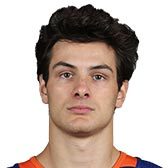 |
Mathew Barzal |
13 |
C |
R |
6' 0" |
187 |
May 26, 1997 |
Coquitlam, BC, CAN |
|
Anthony Beauvillier |
18 |
C |
L |
5' 11" |
182 |
Jun 8, 1997 |
Sorel-Tracy, QC, CAN |
|
Casey Cizikas |
3 |
C |
L |
5' 11" |
195 |
Feb 27, 1991 |
Toronto, ON, CAN |
| 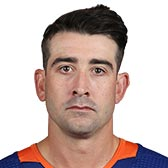 |
Cal Clutterbuck |
15 |
RW |
R |
5' 11" |
216 |
Nov 18, 1987 |
Welland, ON, CAN |
 |
Michael Dal Colle |
28 |
LW |
L |
6' 3" |
204 |
Jun 20, 1996 |
Woodbridge, ON, CAN |
| 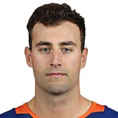 |
Jordan Eberle |
7 |
C |
R |
5' 11" |
187 |
May 15, 1990 |
Regina, SK, CAN |
|
Valtteri Filppula |
51 |
C |
L |
6' 0" |
196 |
Mar 20, 1984 |
Vantaa, FIN |
| 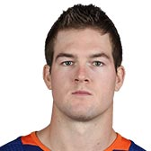 |
Ross Johnston |
32 |
LW |
L |
6' 5" |
235 |
Feb 18, 1994 |
Charlottetown, PE, CAN |
| 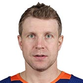 |
Leo Komarov |
47 |
C |
L |
5' 11" |
209 |
Jan 23, 1987 |
Narva, EST |
| 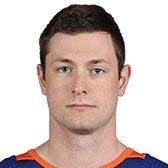 |
Tom Kuhnhackl |
14 |
RW |
L |
6' 2" |
196 |
Jan 21, 1992 |
Landshut, DEU |
| 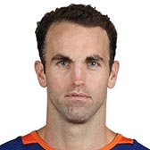 |
Andrew Ladd |
16 |
LW |
L |
6' 3" |
192 |
Dec 12, 1985 |
Maple Ridge, BC, CAN |
|
Anders Lee |
27 |
LW |
L |
6' 3" |
231 |
Jul 3, 1990 |
Edina, MN, USA |
|
Matt Martin |
17 |
LW |
L |
6' 3" |
220 |
May 8, 1989 |
Windsor, ON, CAN |
|
Brock Nelson |
29 |
C |
L |
6' 3" |
212 |
Oct 15, 1991 |
Warroad, MN, USA |
| Photo |
Name |
Number |
Shot |
Height |
Weight |
Birthday |
Hometown |
| 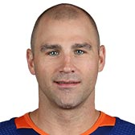 |
Johnny Boychuk |
55 |
R |
6' 2" |
227 |
Jan 19, 1984 |
Edmonton, AB, CAN |
|
Thomas Hickey |
4 |
L |
6' 0" |
183 |
Feb 8, 1989 |
Calgary, AB, CAN |
| 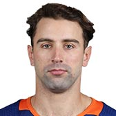 |
Nick Leddy |
2 |
L |
6' 0" |
207 |
Mar 20, 1991 |
Eden Prairie, MN, USA |
|
Scott Mayfield |
24 |
R |
6' 5" |
223 |
Oct 14, 1992 |
St. Louis, MO, USA |
|
Adam Pelech |
3 |
L |
6' 3" |
218 |
Aug 16, 1994 |
Toronto, ON, CAN |
|
Ryan Pulock |
6 |
R |
6' 2" |
217 |
Oct 6, 1994 |
Dauphin, MB, CAN |
| 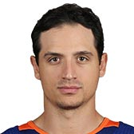 |
Luca Sbisa |
21 |
L |
6' 3" |
204 |
Jan 30, 1990 |
Ozieri, ITA |
|
Devon Toews |
25 |
L |
6' 1" |
191 |
Feb 21, 1994 |
Abbotsford, BC, CAN |
| Photo |
Name |
Number |
Height |
Weight |
Birthday |
Hometown |
|
Thomas Greiss |
1 |
6' 2" |
232 |
Jan 29, 1986 |
Fussen, DEU |
| 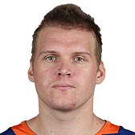 |
Robin Lehner |
40 |
6' 4" |
240 |
Jul 24, 1991 |
Gothenburg, SWE |